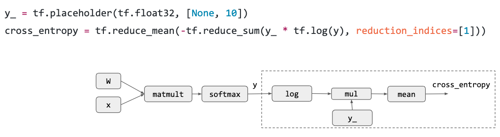
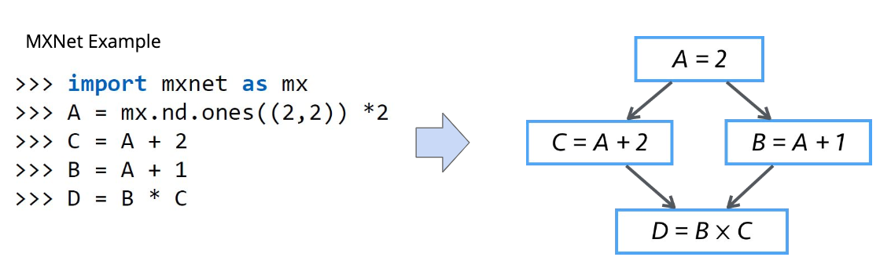
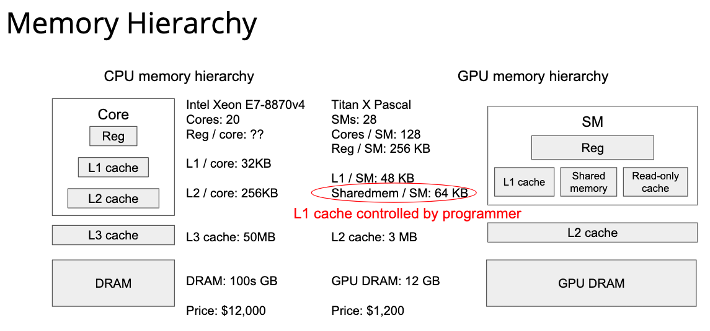

CSE 599W: Systems for ML 课程笔记 1-6
Contents
课程网站 在头条 AML 实习的时候就觉得这个 AI system 方向非常有趣，但是苦于实验室不是搞这一套的，自己拖延症也非常严重，所以一直在入门的边缘徘徊。但是在今天——研一秋学期考试周的前一周，我决定开始学习 AI system 方向最著名的必学课程，Tianqi Chen 在 UW 开设的 CSE599W。 这个课程其实资料并不是很完善，只有 github 上面的几个 repo 和课程网站上面的 slide，缺乏讲课的视频资源。而且在开始学习之前就听说很多地方 slide 写的非常简陋，只能通过 tvm 和 tinyflow 代码慢慢学习。我在学习之前也找了一些 blog 资源，开个坑，希望可以努力坚持下来！ 本人的作业也开源到 github 上面了，希望大家多多指导。
Chenfan Blog——CSE 599W： Systems for ML
不过上面这两个参考资料，第一个有点过于简略，第二个虽然写的很好但是已经五个月没有更新了…可能是坑了，所以后面的内容还是要靠自己慢慢研究了… 第三篇是蓝色大大的 TVM 入门文章，写的非常赞，可以清晰的理解 TVM 存在的意义与解决的问题。
Lecture 1-2
介绍了一波深度学习的基本概念，常见的各种 CNN、RNN、激活函数、BatchNormal、梯度消失与梯度爆炸都用一节课介绍了一通。因为我之前学过 Ng 在 coursera 上面的 Deep learing 专项，所以对这些都很了解了，而且这些内容的资源满大街都是，就不在这里继续介绍了。 第二讲是一个实验课，用 mxnet 搭建一个基础的网络，虽然我之前系统看过沐神的《动手深度学习》，但是我看的是 github 上面的 pytorch 魔改版，mxnet 只在上半年的华为软挑的时候用过一下，不是特别了解。但是这个 gluon api 似乎跟 pytorch 大同小异，这里也不多废话了，有兴趣自己看看原版《动手深度学习》就好了。
Lecture 3: Overview of Deep Learning System
学习过什么是 Deep Learning 了，那么啥是 Deep Learning System 呢？ 在我的理解其实就是从调包到真正计算出结果的全过程，就是 Deep Learning System，也就是通常所说的算法的真正落地。 在这个课程中，Deep Learning System 从高层到底层分成了三个部分：
第一部分就是调包的封装 API，第二部分表示调完包后对调包代码的优化与 Scheduling，第三部分就是最下面的一些高效的 GPU kernel 实现、不同硬件后端的部署等等。 那么一个 Deep Learning 框架在 API 层需要包括什么内容呢？为什么大家要用框架而不是自己从头写呢？ 下面这个图就回答了这个问题，现在的模型越来越大，实现起来需要注意的内容也就越来越多，如果每步都由我们自己来进行链式求导算梯度的话，可能就没有这么多转行深度学习的大哥了（
计算图是一个 Deep Learning 框架的基本概念，节点表示运算操作，边表示数据依赖，这里展示了一个最简单的 Logistic Regression 计算图实例： 首先是计算 loss 之前的前向传播，其实就是一个最简单的矩阵乘法加一个 softmax：
然后是将 softmax 输出的东西搞一个交叉熵作为 loss，相当于最大化 liklihood:

然后是自动微分：
最后通过 SGD 来更新梯度：
结合上面的所有步骤，我们就得到了一个计算图：
最上层的 API 做了最简单的介绍，下面就是中间的 System 部分，讲的是对计算图的优化和对计算的调度。 计算优化最简单的一种就是 memory 优化，比如增加 cache 利用率之类的。因为我们的代码通常跑在多个线程甚至多个计算设备上面，所以并行调度也是非常重要的。最简单的一种并行调度如下图，这是一个 mxnet 代码，因为计算 C 和计算 B 是完全独立的，所以这两个部分可以并行化。

然后简单介绍一下最底层的情况，我们训练完了 model，要部署到不同的设备上。想必大家也都听过各种各样的厂商搞出过各种各样的部署方法，为了产生更好的模型性能：

TVM 就是为了解决这样的问题而诞生的，只要我们都搞成中间代码，全栈自动编译优化，这样 model 就可以非常简单的部署到不同的设备上了：
这门课将在接下来详细介绍 Deep Learning System 的三个部分。
Lecture 4: Backpropagation and Automatic Differentiation
第四节课讲的是 Deep Learning 中的求导方式——Auto-Diff. 首先我们要了解现代计算机实现求导通常有哪些方式。 第一种叫做 Symbolic Differentiation，如图所示：
通过程序来维护整个求导的式子，然后把变量带入就得到最终的导数。这种做法的缺点在于表达式是一个很难维护的东西，最后要维护的东西就会越来越多。正常 Deep Learning 框架显然不应该选择这种求导方式… 第二种叫做 Numerical Differentiation，这种求导形式非常简单，看起来很适合计算机：
但是有个很关键的问题是，这种求导方法要进行两次正向传播，跑起来很慢，而且误差会比较大。但是因为其实现方式的简单，所以这是一个非常好的 grad check 工具。Ng 在 DL 专项里面也是用这种方式去进行 grad check 的。 第三种叫做 Backpropagation，现代 Deep Learning 的核心：
虽然这种做法很适合计算机，效率也不错。但有一个关键的问题，我们在做正向传播的时候要记录中间结果，这样才能在后面进行反向传播，内存耗费很大。而且难以形成计算图，无法进行通用的并行化。 这时候就需要掏出第四种方法，叫做 Automatic Differentiation：
其实思路非常简单，看伪代码就看的出来。这种方法就是通过反拓扑序去生成一个反向的计算图，因为是计算图所以不用保存任何中间变量；也因为是计算图，所以可以进行通用的并行化与代码优化，两全其美！ 接下来就是 Auto-diff 的具体实现，也就是 assignment 1。这次作业的难度不是太大，前面就是一些算子的简单实现，后面有两段重要的代码：
1 | for node in topo_order: |
这段是前向传播的部分，记录每个节点计算出来的结果。前向传播需要正向拓扑序。
1 | for node in reverse_topo_order: |
这段是反向形成 Auto-diff 计算图的过程，跟伪代码很像。进一步解释一下：按照反拓扑序来遍历节点，计算到这个节点就代表着所有相关的梯度都计算完了。现在需要把相关的梯度都加起来，然后加起来的梯度作为这个节点向后面传播的梯度。整个过程很容易理解。
Lecture 5: GPU Programming
这一讲涉及到的部分比较底层，虽然浙大本科的硬件三连质量非常高，但是对于 GPU 架构接触还是非常少的，又没有视频，只能尽力看一看了… 首先讲的是 CPU 的架构，很容易理解，CPU 跟内存有关的操作都很慢，所以才有各种指令预测、cache 优化算法之类的折磨着一代有一代的计算机学子：
而 GPU 则是给 CPU 加了一大堆计算资源，比普通的指令向量化更加强劲：
从这个图可以看出来，GPU 的寄存器数量非常大，所以他可以开很多线程去并行计算，但是从这个图也可以看出来，GPU 的 cache 小的可怜，所以 GPU 适用于那种轻内存读写、重计算的任务，也就是大量的并行计算任务。

然后讲了 CUDA Programming Model，因为我完全不懂 CUDA 编程，所以后面的东西都是我瞎理解的，不一定对。 这个叫做 SIMT 的 Model 就是把几个 thread group 成一个 block，再把几个 block group 成一个 grid，block 可以以任何顺序在 GPU 上面调度。
然后是个最简单的 cuda 程序——vector add。过程非常简单，跟操作系统里面查页表差不多，这里通过 block 下标和 thread 下标可以得到向量加法的下标，然后每个线程都执行一样的代码就可以了。
后面讲了一个窗口 sum 的例子，因为他图画的不太好，所以有点难以理解，我尽力理解了一下：
最简单的实现方式是这样的：
1 |
|
为什么说他图画的不太好，因为他的图跟代码的下标其实是对应不上的。B[0] 的结果应该是从 A[0] 到 A[6] 的和才对，这样下标就和代码完全对应上了。 这个实现非常简单，所以有很大的优化空间。其中最脑残的地方就是每个线程都读了 7 次 A，这样对 GPU 这种小 cache 来说是非常残忍的。
所以一个非常简单的优化就是从一个线程读 7 次 A，变成一个 block (假设有四个线程) 读 9 次 A。
那么下面的实现就很好理解了：
1 | __global__ void windowSumKernel(const float* A, float* B, int n) { |
其中比较奥妙的地方是 if (threadIdx.x < RADIUS) 这个语法块，其实也不难理解，就是把两边的 RADIUS 部分充满。最后是一个简单的矩阵乘法程序：
Lecture 6: Optimize for Hardware Backends
这一讲处于计算图和硬件之间。 首先讲了一些体系结构的基本知识，比如多级 cache 之类的，然后讲了矩阵乘法的 cache 优化，非常基础。 最简单的矩阵乘法如下图所示：
像上面这样直接做矩阵乘法，其实对 cache 的利用率并不高，更好的方式是把矩阵分成很多个小块：

分块的方法可以缩小从下级 cache 到寄存器的 cost，有人想那我直接把 v1、v2 高的大一点，这样不就可以优化更多了吗？ 但是通常来说，寄存器非常小，很难存下一整列或者一整行，所幸 CPU 的 cache 通常比较大，也许可以存下：
把对寄存器的优化和 L1 cache 的优化相结合，就得到了下面这种比较复杂的优化方式：
对于 CPU 来说，代码优化可能集中于 Reuse memory 上面，而 GPU 的优化则是集中于 Reuse among threads 上。（这段其实不太懂，我理解就是跟前一讲的那个 window sum 一样，优化复用不同线程的内存）
对于计算图的代码优化，其实套路千变万化：

为了解决这样的优化问题，我们就需要本门课的核心内容——TVM 了！
Author: Reku
Link: https://reku1997.gitee.io/2019/11/08/cse-599w-systems-for-ml-1-6/
License: 知识共享署名-非商业性使用 4.0 国际许可协议